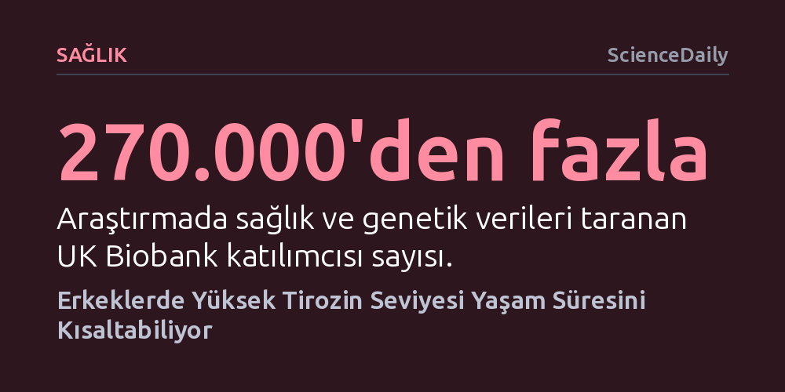

SAGLIK · ScienceDaily · 2026-09-08
270 binden fazla kişinin verilerini inceleyen yeni bir araştırma, kanda yüksek seviyedeki tirozin amino asidinin erkeklerde yaşam süresini yaklaşık bir yıl kısaltabileceğini ortaya koydu. Kadınlarda ise benzer bir olumsuz etki tespit edilmedi.
Odaklanma takviyesi olarak popülerleşen ve proteinli gıdalarda bolca bulunan tirozinin, erkeklerde uzun vadede ömrü kısaltabilecek sinsi bir biyolojik maliyeti olabileceğini gösteriyor.

Protein ağırlıklı beslenenlerin ya da bilişsel performansını artırmak isteyenlerin yakından tanıdığı tirozin amino asidi, uzun yaşam araştırmalarında beklenmedik bir bulguyla gündeme geldi. Hong Kong Üniversitesi ve Georgia Üniversitesi araştırmacılarının yürüttüğü kapsamlı çalışma, dolaşım sisteminde yüksek düzeyde tirozin bulunan erkeklerin ömrünün kayda değer ölçüde kısaldığına işaret ediyor. Elde edilen bulgular, kandaki yüksek tirozin konsantrasyonunun erkeklerin beklenen yaşam süresinden neredeyse tam bir yılı silebileceğini gösteriyor.
Araştırmanın en çarpıcı yönlerinden biri, bu etkinin cinsiyetler arasında keskin bir biçimde ayrışması. Tirozin seviyeleri kadınlarda yaşam süresi üzerinde belirgin veya istatistiksel olarak anlamlı bir olumsuzluk yaratmazken, erkeklerde doğrudan ömür kaybıyla örtüşüyor. Bu durum, bilim dünyasında kadın ve erkek arasındaki ortalama yaşam süresi farkının biyolojik temellerini aydınlatmaya çalışan araştırmacılar için yeni bir tartışma penceresi açıyor.
Beslenme ve yaşam tarzı araştırmalarında en sık rastlanan yanılgı, rastlantısal birlikteliklerin birer sebep-sonuç ilişkisi sanılmasıdır. Bir kişinin kanındaki herhangi bir maddenin yüksek olması, onun başka zararlı alışkanlıklarının ya da altta yatan hastalıklarının dolaylı bir sonucu olabilir. Araştırma ekibi bu metodolojik engeli aşmak amacıyla Birleşik Krallık genelinde 270 bini aşkın kişinin sağlık ve biyolojik profillerini içeren devasa UK Biobank veri tabanını mercek altına aldı.
Bilim insanları yalnızca gözlemsel korelasyonlara güvenmek yerine "Mendelci rastgeleleştirme" adı verilen genetik analiz yöntemini kullandı. Bireylerin yaşam tarzı seçimlerinden ve dışsal faktörlerden bağımsız olan doğal genetik yatkınlıkları analiz eden bu teknik, yüksek tirozin düzeylerinin erkeklerdeki ömür kısalmasında doğrudan bir nedensellik payı taşıdığını gösterdi. Üstelik analizler, benzer bir amino asit olan fenilalanin hesaba katıldığında dahi tirozinin bağımsız bir risk faktörü olarak öne çıkmaya devam ettiğini doğruladı.
Tirozin, vücudun temel yapı taşlarından biri olmanın ötesinde zihinsel süreçlerde kilit rol oynayan bir molekül. Beyinde motivasyon, odaklanma ve ruh hali dengesinden sorumlu olan dopaminin yanı sıra vücudun stres anlarında devreye soktuğu hormonların sentezinde de hammadde olarak kullanılıyor. Araştırmacılar, bu amino asidin neden yalnızca erkeklerin ömrünü kısalttığı sorusuna kesin bir yanıt veremese de eldeki veriler güçlü biyolojik mekanizmalara işaret ediyor.
Olası açıklamalardan ilki, hücresel düzeyde insülin direncinin gelişimiyle ilişkili. Kandaki yüksek tirozin yoğunluğu, hücrelerin kan şekerini dengeleyen insülin hormonuna duyarsızlaşmasına zemin hazırlayarak yaşlanma sürecini hızlandıran kronik metabolik rahatsızlıkları tetikleyebiliyor. Bunun yanında, stres yanıtında görev alan hormonların ve nörotransmitter sinyal yolaklarının erkek ve kadın biyolojisinde farklı işlemesi, tirozinin erkek metabolizması üzerinde orantısız bir yıpranma yaratmasına yol açıyor olabilir. Ayrıca erkeklerin dolaşım sisteminde doğal olarak kadınlardan daha yüksek seviyelerde tirozin bulunması da bu kırılganlığı pekiştiriyor.
Tirozin bugün piyasada zihinsel uyanıklığı, dikkati ve odaklanmayı artırma iddiasıyla besin takviyesi olarak yaygın şekilde satılıyor. Sonuçlar ilk bakışta endişe verici görünse de araştırmanın doğrudan tirozin hapı kullanan bireyleri incelemediğini, vücuttaki bazal kan seviyelerini değerlendirdiğini unutmamak gerekiyor. Dolayısıyla bu çalışma, piyasadaki takviyeleri alan herkesin yaşam süresinin anında kısalacağını doğrudan kanıtlamıyor; ancak kanda kronik olarak yüksek seviyelerin uzun vadeli biyolojik bedelleri olabileceğini hatırlatıyor.
Çalışmayı yürüten uzmanlar, kanında aşırı tirozin birikimi bulunan bireylerin diyet yoluyla protein tüketimini dengeleyerek bu maruziyeti azaltabileceğini öne sürse de bu konuda temkinli olmak şart. Tirozini gıdalar üzerinden bilinçli şekilde kısıtlamanın insan ömrünü uzatıp uzatmayacağı henüz klinik deneylerle ispatlanmış değil. Uzmanlar, somut beslenme tavsiyelerine dönüştürülmeden önce bu mekanizmanın daha fazla biyolojik deneyle doğrulanması ve sağlıklı yaşlanma üzerindeki net sınırların belirlenmesi gerektiğinin altını çiziyor.